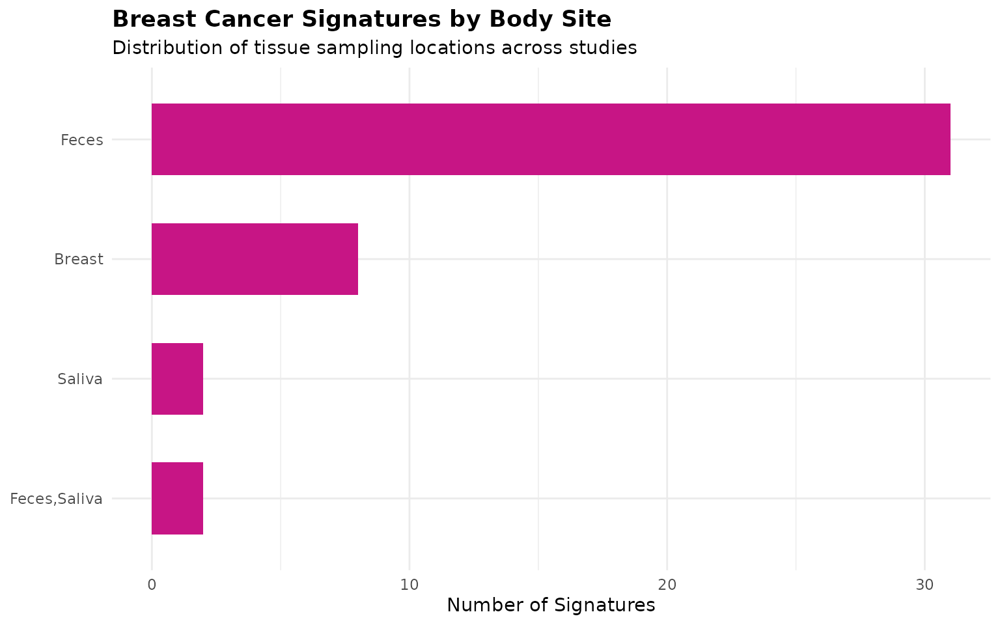
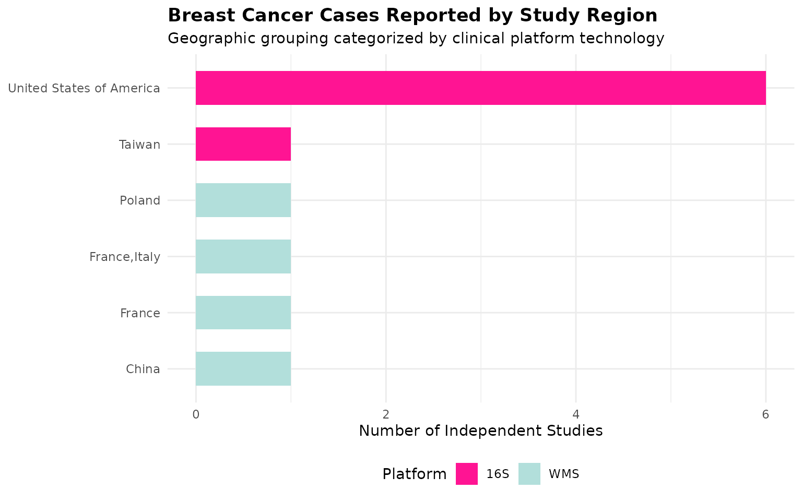
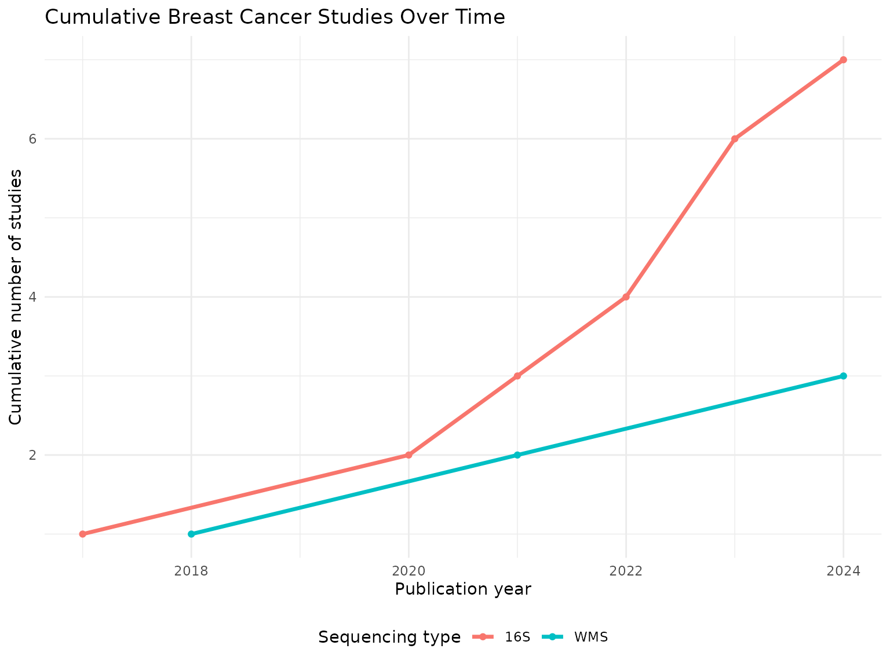
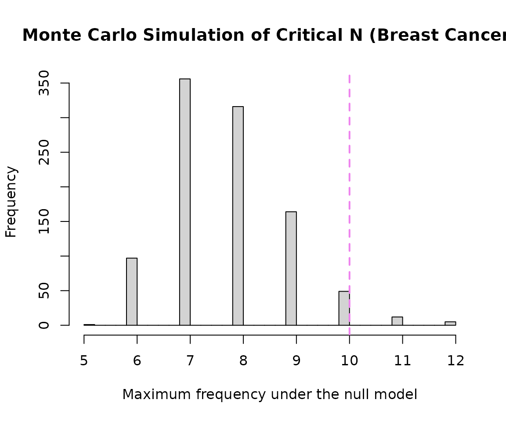
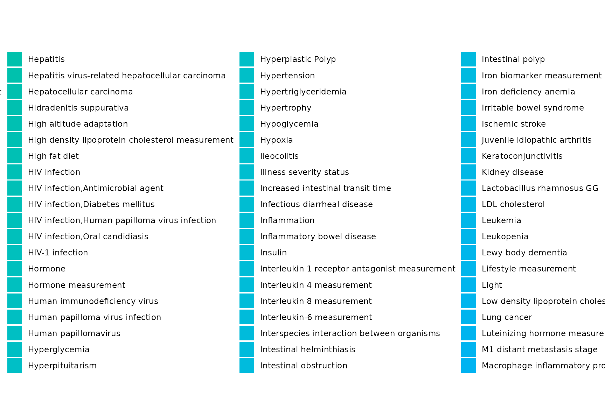
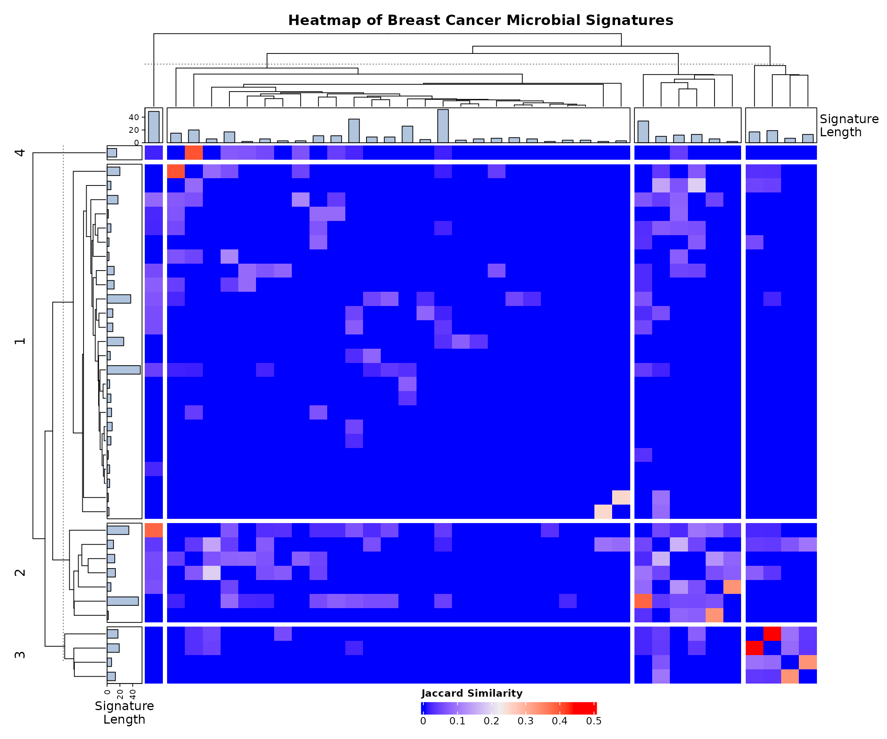

Focused Sub-Analysis of Breast Cancer Microbial Signatures
Condition-Specific Analysis with Cross-Condition Mapping (BugSigDB)
Sally Karimi Kinyua
Source:vignettes/WomensHealth_BreastCancer_vignette.Rmd
WomensHealth_BreastCancer_vignette.RmdIntroduction
This vignette demonstrates a focused sub-analysis of microbial signatures associated specifically with breast cancer using BugSigDB. Unlike the Cervical Cancer sub-analysis, no body-site restriction is applied by default here: breast cancer microbiome research spans both breast tissue itself and fecal/gut samples (investigating the gut-breast axis), so restricting to breast tissue alone would discard a substantial, legitimately relevant portion of the evidence base. This notebook also evaluates how breast-cancer-associated taxa overlap with other broader women’s health conditions.
Download and Prepare Data
full.dat <- bugsigdbr::importBugSigDB(cache = FALSE)Select Breast Cancer Specific Signatures
breast_terms <- c(
"Breast cancer",
"Breast cancer stage",
"Breast carcinoma",
"HER2 Positive Breast Carcinoma"
)
breast_dat <- dat %>%
filter(Condition %in% breast_terms) %>%
distinct()
nrow(breast_dat)## [1] 43| Condition | n |
|---|---|
| Breast cancer | 33 |
| Breast carcinoma | 6 |
| Breast cancer stage | 2 |
| HER2 Positive Breast Carcinoma | 2 |
Study Characteristics
| Body site | Sequencing type | n |
|---|---|---|
| Breast | 16S | 8 |
| Feces | 16S | 22 |
| Feces | WMS | 9 |
| Feces,Saliva | 16S | 2 |
| Saliva | 16S | 2 |
| Year | n |
|---|---|
| 2017 | 2 |
| 2018 | 2 |
| 2020 | 6 |
| 2021 | 8 |
| 2022 | 6 |
| 2023 | 4 |
| 2024 | 15 |
The body site breakdown above shows how the evidence splits between breast tissue itself and other sites (most likely feces, reflecting gut-breast axis research). Review this table before deciding whether a body-site restriction is warranted for your specific research question - the default here keeps all sites.
Demographic & Anatomy Metrics Visualisations
breast_dat %>%
count(`Body site`, sort = TRUE) %>%
ggplot(aes(x = reorder(`Body site`, n), y = n)) +
geom_col(fill = "#C71585", width = 0.6) +
coord_flip() +
labs(
title = "Breast Cancer Signatures by Body Site",
subtitle = "Distribution of tissue sampling locations across studies",
x = NULL, y = "Number of Signatures"
) +
theme_minimal(base_size = 11) +
theme(plot.title = element_text(face = "bold"))
breast_dat %>%
distinct(PMID, `Location of subjects`, `Sequencing type`) %>%
count(`Location of subjects`, `Sequencing type`) %>%
filter(!is.na(`Location of subjects`)) %>%
ggplot(aes(x = reorder(`Location of subjects`, n), y = n, fill = `Sequencing type`)) +
geom_col(width = 0.6) +
scale_fill_manual(values = c("16S" = "#FF1493", "WMS" = "#B2DFDB")) +
coord_flip() +
labs(
title = "Breast Cancer Cases Reported by Study Region",
subtitle = "Geographic grouping categorized by clinical platform technology",
x = NULL, y = "Number of Independent Studies", fill = "Platform"
) +
theme_minimal(base_size = 11) +
theme(
plot.title = element_text(face = "bold"),
legend.position = "bottom"
)
breast_dat %>%
distinct(PMID, Year, `Sequencing type`) %>%
filter(!is.na(Year)) %>%
count(Year, `Sequencing type`) %>%
group_by(`Sequencing type`) %>%
arrange(Year) %>%
mutate(cumulative_n = cumsum(n)) %>%
ungroup() %>%
ggplot(aes(x = Year, y = cumulative_n, color = `Sequencing type`)) +
geom_line(linewidth = 1.2) +
geom_point() +
labs(
title = "Cumulative Breast Cancer Studies Over Time",
x = "Publication year", y = "Cumulative number of studies", color = "Sequencing type"
) +
theme_minimal(base_size = 11) +
theme(legend.position = "bottom")
Taxonomic Summary
taxa.table <- createTaxonTable(breast_dat)
knitr::kable(head(taxa.table, 20))| Taxon Name | Taxonomic Level | total_signatures | increased_signatures | decreased_signatures | Binomial Test pval |
|---|---|---|---|---|---|
| Bacteroides | genus | 6 | 4 | 2 | 0.69 |
| Eggerthella | genus | 5 | 3 | 2 | 1.00 |
| Streptococcus | genus | 5 | 1 | 4 | 0.37 |
| Oscillospiraceae | family | 5 | 3 | 2 | 1.00 |
| Collinsella aerofaciens | species | 4 | 0 | 4 | 0.12 |
| Ruminococcus | genus | 4 | 1 | 3 | 0.63 |
| Lachnospiraceae | family | 4 | 1 | 3 | 0.63 |
| Anaerostipes | genus | 4 | 0 | 4 | 0.12 |
| Acidaminococcus | genus | 4 | 3 | 1 | 0.63 |
| Dialister | genus | 4 | 0 | 4 | 0.12 |
Split by Sequencing Type
breast.wms <- breast_dat %>% filter(`Sequencing type` == "WMS")
breast.16s <- breast_dat %>% filter(`Sequencing type` == "16S")
cat("WMS - signatures:", nrow(breast.wms), "| studies:", n_distinct(breast.wms$PMID), "\n")## WMS - signatures: 9 | studies: 3
cat("16S - signatures:", nrow(breast.16s), "| studies:", n_distinct(breast.16s$PMID), "\n")## 16S - signatures: 34 | studies: 7Long-Format Taxon Table Setup
sigs.breast <- bugsigdbr::getSignatures(breast_dat, tax.id.type = "taxname")
# Also pull a broader copy for cross-condition reference background mapping
sigs.all <- bugsigdbr::getSignatures(dat, tax.id.type = "taxname")
taxon.long <- purrr::map_dfr(seq_along(sigs.all), function(i) {
taxa <- sigs.all[[i]]
if (length(taxa) == 0) return(NULL)
tibble::tibble(sig_id = i, taxon = taxa)
}) %>%
left_join(
dat %>%
mutate(sig_id = row_number()) %>%
select(sig_id, PMID, Condition, `Sequencing type`, `Abundance in Group 1`),
by = "sig_id"
) %>%
rename(direction = `Abundance in Group 1`)
cat("Long-format table successfully built with", nrow(taxon.long), "rows.\n")## Long-format table successfully built with 58971 rows.| sig_id | taxon | PMID | Condition | Sequencing type | direction |
|---|---|---|---|---|---|
| 1 | Acinetobacter johnsonii | NA | Obesity | WMS | increased |
| 1 | Anaerostipes | NA | Obesity | WMS | increased |
| 1 | Anaerostipes caccae | NA | Obesity | WMS | increased |
| 1 | Brachyspira hyodysenteriae | NA | Obesity | WMS | increased |
| 1 | Coprococcus | NA | Obesity | WMS | increased |
| 1 | Allocoprococcus comes | NA | Obesity | WMS | increased |
Taxon Frequency Across Studies
taxon.freq <- taxon.long %>%
filter(Condition %in% breast_terms) %>%
distinct(PMID, taxon, direction) %>%
count(taxon, direction, name = "n_studies") %>%
group_by(taxon) %>%
mutate(total_studies = sum(n_studies)) %>%
ungroup() %>%
arrange(desc(total_studies))
n_distinct(taxon.freq$taxon)## [1] 294
taxon.freq %>%
distinct(taxon, total_studies) %>%
slice_max(total_studies, n = 15) %>%
knitr::kable()| taxon | total_studies |
|---|---|
| Lachnospiraceae | 4 |
| Prevotella | 4 |
| Anaerostipes | 3 |
| Bacillota | 3 |
| Mediterraneibacter torques | 3 |
| Alistipes | 2 |
| Bacteroides | 2 |
| Bacteroidota | 2 |
| Blautia | 2 |
| Dialister | 2 |
| Dorea longicatena | 2 |
| Eggerthella | 2 |
| Helotiales | 2 |
| Methanobrevibacter | 2 |
| Prevotellaceae | 2 |
| Saccharomyces | 2 |
| Saccharomycetaceae | 2 |
| Saccharomycetales | 2 |
| Saccharomycetes | 2 |
| Trichosporonaceae | 2 |
| Trichosporonales | 2 |
| [Clostridium] leptum | 2 |
| uncultured Oscillospiraceae bacterium | 2 |
Core Consensus Signature
concordance <- taxon.long %>%
filter(Condition %in% breast_terms) %>%
distinct(PMID, taxon, direction) %>%
group_by(taxon) %>%
summarise(
n_studies = n_distinct(PMID),
n_increased = sum(direction == "increased"),
n_decreased = sum(direction == "decreased"),
concordance_pct = round(max(n_increased, n_decreased) / n_studies * 100, 1),
majority_dir = if_else(n_increased >= n_decreased, "increased", "decreased"),
.groups = "drop"
) %>%
arrange(desc(n_studies), desc(concordance_pct))
# Standard threshold (matching the General analysis): >=3 studies, >=75% concordance.
# If this returns very few/zero rows given the smaller sample size here, consider
# loosening to >=2 studies / >=70% concordance, as was done for Cervical Cancer -
# and note that deviation explicitly in the Discussion section if you do.
core.sig <- concordance %>%
filter(n_studies >= 3, concordance_pct >= 75) %>%
arrange(majority_dir, desc(n_studies))
nrow(core.sig)## [1] 0
knitr::kable(core.sig)| taxon | n_studies | n_increased | n_decreased | concordance_pct | majority_dir |
|---|
Core Signature Visualisation
if (nrow(core.sig) > 0) {
core.sig %>%
group_by(majority_dir) %>%
slice_max(n_studies, n = 15, with_ties = FALSE) %>%
ungroup() %>%
mutate(
direction_label = if_else(majority_dir == "increased", "Increased", "Decreased"),
taxon_label = paste0(str_wrap(taxon, width = 28), " (", n_studies, ")")
) %>%
ggplot(aes(x = reorder(taxon_label, n_studies), y = n_studies, fill = direction_label)) +
geom_col(width = 0.7) +
geom_text(aes(label = paste0(concordance_pct, "%")), hjust = -0.15, size = 3.3) +
coord_flip(clip = "off") +
facet_wrap(~direction_label, scales = "free_y", ncol = 1) +
scale_fill_manual(values = c("Increased" = "#FFB7D5", "Decreased" = "#FDF6E2")) +
scale_y_continuous(expand = expansion(mult = c(0, 0.35))) +
labs(
title = "Core Breast Cancer Consensus Signature",
x = NULL, y = "Number of independent studies", fill = NULL
) +
theme_minimal(base_size = 12) +
theme(legend.position = "none", plot.title = element_text(face = "bold"))
} else {
cat("No taxa met the core-signature threshold at this sample size.")
}## No taxa met the core-signature threshold at this sample size.WMS vs 16S Concordance
dir.by.platform <- taxon.long %>%
filter(Condition %in% breast_terms) %>%
filter(`Sequencing type` %in% c("WMS", "16S")) %>%
distinct(PMID, taxon, direction, `Sequencing type`) %>%
count(taxon, `Sequencing type`, direction, name = "n_studies") %>%
group_by(taxon, `Sequencing type`) %>%
slice_max(n_studies, n = 1, with_ties = FALSE) %>%
ungroup() %>%
select(taxon, `Sequencing type`, majority_dir = direction)
platform.compare <- dir.by.platform %>%
pivot_wider(names_from = `Sequencing type`, values_from = majority_dir) %>%
filter(!is.na(WMS), !is.na(`16S`)) %>%
rename(dir_WMS = WMS, dir_16S = `16S`) %>%
mutate(agree = dir_WMS == dir_16S)
nrow(platform.compare)## [1] 8
if (nrow(platform.compare) > 0) {
sum(platform.compare$agree)
round(100 * mean(platform.compare$agree), 1)
knitr::kable(platform.compare)
} else {
cat("No taxa reported by both WMS and 16S in this breast-cancer dataset.")
}| taxon | dir_16S | dir_WMS | agree |
|---|---|---|---|
| Bacillota | increased | decreased | FALSE |
| Bacteroides | increased | increased | TRUE |
| Bacteroidota | decreased | increased | FALSE |
| Dialister | increased | decreased | FALSE |
| Dorea longicatena | increased | increased | TRUE |
| Mediterraneibacter torques | decreased | increased | FALSE |
| Prevotella | decreased | decreased | TRUE |
| [Clostridium] leptum | increased | increased | TRUE |
Taxon Enrichment Analysis
n.universe <- n_distinct(taxon.long %>% filter(Condition %in% breast_terms) %>% pull(taxon))
n.sigs <- length(sigs.breast)
enrichment.df <- taxon.freq %>%
distinct(taxon, total_studies) %>%
mutate(
observed = total_studies,
expected = n.sigs / n.universe,
enrichment_ratio = observed / expected,
log2_enrichment = log2(enrichment_ratio),
p_value = purrr::map_dbl(observed, ~ binom.test(
x = .x, n = n.sigs, p = 1 / n.universe, alternative = "greater"
)$p.value),
p_adj = p.adjust(p_value, method = "BH")
) %>%
arrange(p_adj, desc(log2_enrichment))
sum(enrichment.df$p_adj < 0.05)## [1] 5| taxon | total_studies | observed | expected | enrichment_ratio | log2_enrichment | p_value | p_adj |
|---|---|---|---|---|---|---|---|
| Lachnospiraceae | 4 | 4 | 0.1462585 | 27.34884 | 4.773408 | 0.0000149 | 0.0021839 |
| Prevotella | 4 | 4 | 0.1462585 | 27.34884 | 4.773408 | 0.0000149 | 0.0021839 |
| Anaerostipes | 3 | 3 | 0.1462585 | 20.51163 | 4.358370 | 0.0004386 | 0.0257906 |
| Bacillota | 3 | 3 | 0.1462585 | 20.51163 | 4.358370 | 0.0004386 | 0.0257906 |
| Mediterraneibacter torques | 3 | 3 | 0.1462585 | 20.51163 | 4.358370 | 0.0004386 | 0.0257906 |
| Alistipes | 2 | 2 | 0.1462585 | 13.67442 | 3.773408 | 0.0095236 | 0.1217367 |
| Bacteroides | 2 | 2 | 0.1462585 | 13.67442 | 3.773408 | 0.0095236 | 0.1217367 |
| Bacteroidota | 2 | 2 | 0.1462585 | 13.67442 | 3.773408 | 0.0095236 | 0.1217367 |
| Blautia | 2 | 2 | 0.1462585 | 13.67442 | 3.773408 | 0.0095236 | 0.1217367 |
| Dialister | 2 | 2 | 0.1462585 | 13.67442 | 3.773408 | 0.0095236 | 0.1217367 |
| Dorea longicatena | 2 | 2 | 0.1462585 | 13.67442 | 3.773408 | 0.0095236 | 0.1217367 |
| Eggerthella | 2 | 2 | 0.1462585 | 13.67442 | 3.773408 | 0.0095236 | 0.1217367 |
| Helotiales | 2 | 2 | 0.1462585 | 13.67442 | 3.773408 | 0.0095236 | 0.1217367 |
| Methanobrevibacter | 2 | 2 | 0.1462585 | 13.67442 | 3.773408 | 0.0095236 | 0.1217367 |
| Prevotellaceae | 2 | 2 | 0.1462585 | 13.67442 | 3.773408 | 0.0095236 | 0.1217367 |
Monte Carlo Critical N
siglengths <- lengths(breast_dat$`MetaPhlAn taxon names`)
criticalN <- getCriticalN(
relevant.sigs = breast_dat$`MetaPhlAn taxon names`,
siglengths = siglengths
)
criticalN## $critical_n
## 95%
## 10
##
## $ci_lower
## 2.5%
## 10
##
## $ci_upper
## 97.5%
## 10
##
## $simulated_values
## [1] 7 7 7 8 7 8 7 8 7 7 7 6 9 7 7 7 7 7 9 7 8 6 9 8
## [25] 6 8 8 8 6 8 8 8 7 6 7 8 6 6 9 7 7 7 8 9 6 9 8 9
## [49] 7 7 8 8 7 8 7 6 7 7 8 7 8 9 8 9 9 9 8 8 7 7 9 8
## [73] 8 6 8 8 8 7 8 9 8 8 7 9 8 7 9 6 7 10 7 6 7 7 8 7
## [97] 8 10 7 7 7 7 7 8 6 8 8 7 7 7 8 8 8 8 7 8 7 8 8 9
## [121] 6 7 6 9 5 8 7 7 9 8 11 8 9 7 6 7 7 8 9 9 8 7 7 9
## [145] 6 8 7 6 8 7 7 7 11 7 6 8 10 9 8 8 8 9 8 7 9 8 9 7
## [169] 9 8 7 9 8 8 7 10 7 8 9 7 8 8 8 6 7 7 8 8 8 9 8 8
## [193] 9 12 7 9 9 7 9 6 7 8 9 7 8 8 10 8 6 8 7 8 9 7 7 7
## [217] 7 8 8 10 7 7 7 7 8 8 8 10 8 7 9 9 6 8 9 8 10 9 7 8
## [241] 9 8 9 9 7 8 7 6 8 9 7 10 8 7 7 8 10 7 8 7 8 8 8 6
## [265] 7 8 7 8 9 11 9 8 9 7 9 8 8 8 9 7 7 7 8 7 7 8 6 12
## [289] 7 9 9 7 7 8 6 8 7 9 7 9 7 10 9 8 7 11 7 7 8 9 9 7
## [313] 9 11 7 9 10 8 6 8 8 8 7 7 8 7 9 10 7 9 7 8 7 7 7 8
## [337] 10 10 8 8 10 9 9 6 7 7 6 8 6 8 9 8 7 9 7 7 6 7 10 6
## [361] 7 8 9 8 9 7 9 7 7 8 9 8 7 8 7 8 7 9 8 9 7 8 7 7
## [385] 8 11 9 7 7 7 9 7 9 8 7 7 7 9 7 7 9 7 6 10 7 8 8 7
## [409] 7 7 6 8 8 8 11 6 10 6 8 7 7 7 9 8 6 10 6 8 8 10 7 11
## [433] 8 7 6 7 7 8 8 8 8 8 8 7 7 10 7 8 8 7 9 7 6 10 7 7
## [457] 7 7 6 8 8 7 8 8 7 8 7 9 8 7 7 7 8 6 7 9 10 7 7 7
## [481] 8 7 9 7 10 8 8 8 8 7 7 8 8 9 7 7 6 9 6 8 8 7 9 6
## [505] 8 9 8 7 6 7 8 7 12 9 8 7 8 7 7 8 6 9 7 7 8 9 6 9
## [529] 8 6 8 8 7 9 8 7 7 7 7 9 8 7 8 7 9 7 7 8 9 7 6 7
## [553] 7 7 9 7 7 7 7 10 8 8 9 7 7 10 8 9 7 7 7 8 9 9 7 6
## [577] 6 8 7 6 7 9 7 8 9 7 7 7 8 9 9 10 8 7 7 10 7 9 7 7
## [601] 9 7 11 7 9 6 8 7 9 8 6 8 9 8 7 9 6 6 9 6 8 8 7 8
## [625] 11 6 9 8 7 8 8 9 8 7 7 6 8 6 8 7 7 9 6 7 12 8 7 8
## [649] 8 8 9 8 7 8 8 7 8 8 8 9 8 7 8 8 6 7 7 8 7 6 9 8
## [673] 7 8 7 6 8 7 9 8 7 8 10 8 7 7 6 7 9 8 12 8 7 8 7 7
## [697] 6 7 8 7 8 7 6 7 8 7 8 6 7 7 8 7 9 7 7 7 9 7 7 7
## [721] 8 7 8 6 7 9 8 7 9 9 8 9 6 7 7 9 8 7 7 7 9 8 10 8
## [745] 7 8 8 7 8 7 10 7 7 7 9 7 10 8 9 9 7 10 8 8 6 8 8 8
## [769] 8 7 7 7 8 9 10 8 8 7 8 8 9 8 6 7 8 8 9 8 9 9 6 9
## [793] 6 10 7 10 9 7 9 9 7 6 7 8 8 7 8 7 7 7 7 6 7 7 7 9
## [817] 10 8 8 8 7 9 9 9 8 8 10 8 8 8 7 9 8 7 6 6 8 9 8 8
## [841] 8 8 7 8 6 9 8 7 9 10 9 8 9 7 6 7 7 6 8 7 9 9 7 10
## [865] 8 8 8 8 8 7 10 8 8 11 8 7 6 8 8 10 8 7 7 8 7 7 10 9
## [889] 7 6 7 7 7 7 6 7 8 7 8 8 8 8 9 7 7 7 7 8 8 8 7 9
## [913] 8 8 6 8 11 7 8 8 8 7 8 7 6 7 9 7 10 6 8 7 7 7 10 8
## [937] 7 8 6 7 6 9 10 6 7 9 8 7 7 8 8 9 7 8 9 7 7 8 9 7
## [961] 8 9 9 9 8 7 8 6 10 7 8 7 9 7 7 7 9 8 8 7 8 6 6 8
## [985] 9 10 7 6 7 8 9 7 7 8 7 7 7 7 6 8
##
## $alpha
## [1] 0.05
##
## $quantile_label
## [1] "95th percentile"
hist(
criticalN$simulated_values,
breaks = 30,
main = "Monte Carlo Simulation of Critical N (Breast Cancer)",
xlab = "Maximum frequency under the null model"
)
abline(
v = criticalN$critical_n,
col = "violet",
lwd = 2,
lty = 2
)
Cross-Condition Taxa Overlap Analysis
This section explores whether the taxa altered in breast cancer are unique to breast tissue/tumor microenvironment changes or represent shared dysbiosis markers also seen across other women’s health conditions.
breast_taxa <- taxon.long %>%
filter(Condition %in% breast_terms) %>%
distinct(taxon) %>%
pull(taxon)
shared_taxa_counts <- taxon.long %>%
filter(taxon %in% breast_taxa) %>%
group_by(taxon) %>%
summarise(
total_womens_health_studies = n_distinct(PMID),
distinct_conditions_linked = n_distinct(Condition),
top_other_conditions = paste(
head(setdiff(unique(Condition), breast_terms), 3),
collapse = ", "
),
.groups = "drop"
) %>%
arrange(desc(distinct_conditions_linked))
shared_taxa_counts %>%
slice_max(distinct_conditions_linked, n = 20, with_ties = FALSE) %>%
knitr::kable(
caption = "Top Breast-Cancer-Associated Taxa and Their Links to Other Women's Health Conditions",
col.names = c("Taxon Name", "Total WH Studies", "Total Distinct Conditions", "Other Conditions it Often Appears In")
)| Taxon Name | Total WH Studies | Total Distinct Conditions | Other Conditions it Often Appears In |
|---|---|---|---|
| Prevotella | 354 | 211 | Illness severity status, Antimicrobial agent, Obesity |
| Lactobacillus | 335 | 201 | Antimicrobial agent, Oxygen, Illness severity status |
| Bacteroides | 345 | 199 | Autism, Autoimmune disease, Obesity |
| Lachnospiraceae | 331 | 199 | Autoimmune disease, Smoking behavior, Irritable bowel syndrome |
| Bacillota | 313 | 190 | Type II diabetes mellitus, Autism, Autoimmune disease |
| Faecalibacterium | 278 | 183 | Obesity, Autoimmune disease, Irritable bowel syndrome |
| Bifidobacterium | 275 | 177 | Food allergy, Irritable bowel syndrome, Autism |
| Clostridium | 258 | 175 | Irritable bowel syndrome, Autism, Autoimmune disease |
| Actinomycetota | 265 | 171 | Autism, Ethnic group,Place of residence measurement, Ulcerative colitis |
| Pseudomonadota | 241 | 166 | Autism, Autoimmune disease, Ethnic group,Place of residence measurement |
| Roseburia | 228 | 165 | Autoimmune disease, Smoking behavior, Irritable bowel syndrome |
| Blautia | 246 | 164 | Autoimmune disease, Irritable bowel syndrome, Colorectal cancer |
| Veillonella | 241 | 161 | Obesity, Antimicrobial agent, Oxygen |
| Bacteroidota | 247 | 158 | Autism, Autoimmune disease, Irritable bowel syndrome |
| Enterobacteriaceae | 213 | 155 | Autoimmune disease, Irritable bowel syndrome, Sampling site |
| Alistipes | 198 | 148 | Autoimmune disease, Irritable bowel syndrome, Colorectal cancer |
| Ruminococcus | 218 | 147 | Autism, Autoimmune disease, Irritable bowel syndrome |
| Parabacteroides | 208 | 145 | Autism, Autoimmune disease, Irritable bowel syndrome |
| Clostridia | 188 | 140 | Type II diabetes mellitus, Autoimmune disease, Colorectal carcinoma |
| Lactobacillaceae | 194 | 134 | Autoimmune disease, Antimicrobial agent, Psoriasis |
Shared Dysbiosis Visualisation
top_shared_taxa <- shared_taxa_counts %>%
filter(distinct_conditions_linked > 1) %>%
slice_max(total_womens_health_studies, n = 15, with_ties = FALSE) %>%
pull(taxon)
if (length(top_shared_taxa) > 0) {
taxon.long %>%
filter(taxon %in% top_shared_taxa) %>%
mutate(Condition_Group = if_else(Condition %in% breast_terms, "Breast Cancer", Condition)) %>%
count(taxon, Condition_Group) %>%
ggplot(aes(x = reorder(taxon, n), y = n, fill = Condition_Group)) +
geom_col() +
coord_flip() +
labs(
title = "Breast Cancer Taxa Active in Other Conditions",
subtitle = "Tracking where prominent breast-cancer-associated microbes show up elsewhere",
x = NULL, y = "Total Signature Mentions", fill = "Condition Group"
) +
theme_minimal(base_size = 11) +
theme(legend.position = "right")
}
Signature Similarity and Heatmap
allsigs <- bugsigdbr::getSignatures(breast_dat, tax.id.type = "taxname")
allsigs <- allsigs[sapply(allsigs, length) > 1]
if (length(allsigs) > 1) {
jmat <- BugSigDBStats::calcJaccardSimilarity(allsigs)
siglengths <- sapply(allsigs, length)
ha <- HeatmapAnnotation(
`Signature\nLength` = anno_barplot(siglengths, gp = gpar(fill = "#B0C4DE"), height = unit(1.2, "cm"))
)
hr <- rowAnnotation(
`Signature\nLength` = anno_barplot(siglengths, gp = gpar(fill = "#B0C4DE"), width = unit(1.2, "cm"))
)
hm <- Heatmap(
jmat,
top_annotation = ha,
left_annotation = hr,
show_row_names = FALSE,
show_column_names = FALSE,
row_km = 4,
column_km = 4,
row_gap = unit(1.5, "mm"),
column_gap = unit(1.5, "mm"),
row_dend_width = unit(2.5, "cm"),
column_dend_height = unit(2.5, "cm"),
column_title = "Heatmap of Breast Cancer Microbial Signatures",
column_title_gp = gpar(fontsize = 14, fontface = "bold"),
heatmap_legend_param = list(
title = "Jaccard Similarity",
direction = "horizontal",
legend_width = unit(6, "cm")
)
)
draw(hm, heatmap_legend_side = "bottom", padding = unit(c(5, 5, 5, 5), "mm"))
png(filename = "BreastCancer_heatmap.png", width = 12, height = 10, units = "in", res = 300)
draw(hm, heatmap_legend_side = "bottom", padding = unit(c(5, 5, 5, 5), "mm"))
dev.off()
}
## agg_png
## 2Dendrogram
if (exists("jmat") && nrow(jmat) > 1) {
hc <- hclust(as.dist(1 - jmat))
dend <- as.dendrogram(hc)
par(mar = c(5, 2, 4, 2))
plot(
dend,
horiz = TRUE,
leaflab = "none",
main = "Hierarchical Cluster Map of Breast Cancer Microbial Signatures",
xlab = "Distance (1 - Jaccard similarity)",
cex.main = 1.3,
lwd = 0.8
)
}